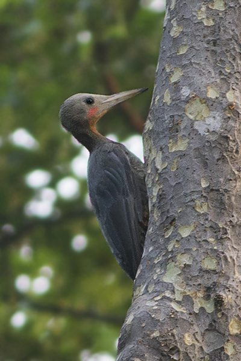

ग्रेट स्लेटी कठफोड़वाGreat Slaty Woodpecker
Mulleripicus pulverulentus · Picidae · BRD-0317

- Scientific name वैज्ञानिक नाम
- Mulleripicus pulverulentus (Temminck, 1826)
- Family कुल
- Picidae
- Hindi हिंदी
- ग्रेट स्लेटी कठफोड़वा
- Local names स्थानीय नाम
- great slaty woodpecker
- Status here यहाँ की स्थिति
- native
- Movement आवागमन
- Resident, here all year
- Known from कहाँ दर्ज
- Others have published records from the wider Awadh–Purvanchal plain, none yet from Basti–Ayodhya अवध–पूर्वांचल से दूसरों के प्रकाशित अभिलेख, बस्ती–अयोध्या से अभी नहीं
- IUCN IUCN
- VU
- Review समीक्षा
- not yet reviewed
When to look कब देखें
Present all year. साल भर मौजूद।
Tell it apart from इनसे अलग पहचानें
ग्रेट स्लेटी कठफोड़वा / Great Slaty Woodpecker
Mulleripicus pulverulentus (Temminck, 1826) — Picidae
ग्रेट स्लेटी कठफोड़वा — एशिया का सबसे विशाल जीवित कठफोड़वा है, जो तराई के प्राचीन साल और नदी तटीय वनों के सबसे विशाल पेड़ों पर निवास करता है। इसका शरीर एक बड़े कौवे या छोटे चील के बराबर होता है, जिसमें बहुत लंबी पतली गर्दन, नुकीला लंबा सिर और सलेटी-धूसर पंख होते हैं। नर पक्षी के गाल पर लाल रंग की एक हल्की मूंछ जैसी पट्टी होती है और गले पर हल्का पीलापन होता है। यह अक्सर तीन से छह पक्षियों के छोटे सामाजिक समूहों में बड़े पेड़ों के तनों पर चढ़ते हुए जोर-जोर से हंसने जैसी 'व्हिनिंग' आवाज निकालता है।
Quick Identification त्वरित पहचान
| Feature | Description |
|---|---|
| Habit | Gigantic, social arboreal woodpecker foraging on massive forest tree trunks |
| Plumage | Uniform slaty-grey, frosted or powdered with fine whitish flecks |
| Neck and Head | Unusually long, thin swan-like neck with large triangular hammerhead |
| Bill | Very long, heavy, straight, chisel-tipped; ivory-white with dark culmen |
| Male Marks | Narrow crimson-red moustachial patch at base of bill; buffy-yellow throat |
| Female Marks | Entirely grey-headed without red moustachial stripes |
| Call | Extraordinary loud laughing or whinnying cackle echoing through deep forest |
Field tip: Scan the upper boles of massive old-growth sal trees. The enormous size (largest Asian woodpecker), all-grey plumage with fine whitish powdering, extremely long slender neck, and loud laughing contact calls distinguish this species without fail.
हिंदी:
यह बहुत बड़े आकार का सलेटी रंग का कठफोड़वा है जिसकी गर्दन हंस की तरह लंबी और पतली होती है।
नर के गाल पर एक छोटी लाल पट्टी होती है जबकि मादा पूरी तरह सलेटी होती है।
यह जंगल में जोर-जोर से गूंजने वाली हंसने जैसी आवाज निकालता है।
Morphology आकारिकी
Measurements as given by Baker (1927 as Mulleripicus pulverulentus):
| Measurement | Range |
|---|---|
| Wing | 221–245 mm (Baker 1927) |
The Great Slaty Woodpecker is the largest extant woodpecker species in the Old World. Its general plumage is dark slaty-grey above and below, with the crown, back, and breast finely frosted or dusted with minute whitish feather tips that impart a powdery appearance.
The throat and foreneck are washed with pale buff or ochraceous yellow, contrasting subtly with the slaty chest. In adult males, a prominent crimson-red malar stripe extends backwards from the base of the lower mandible across the cheek. In females, this red patch is completely absent, the head and neck being uniform slaty-grey.
The bill is very long, stout, and chisel-pointed, pale ivory-whitish or bone-coloured with a dusky slate culmen ridge. The iris is dark hazel-brown to reddish-brown. The legs and zygodactyl feet are dull leaden-slate or dark greenish-grey.
Vocalisations. Distinctive loud, resonant whinnying or braying calls rendered as kwo-kwo-kwo-kwo-kwo, reminiscent of high-pitched hysterical laughter.
हिंदी:
इसके पंखों की लंबाई 221 से 245 मिमी होती है।
इसकी लंबी भारी चोंच हाथीदांत जैसी सफेद और मजबूत होती है।
नर के चेहरे पर लाल रंग का निशान होता है जो मादा में नहीं पाया जाता।
Behaviour & Ecology व्यवहार और पारिस्थितिकी
Mulleripicus pulverulentus is an exceptionally gregarious woodpecker, typically travelling in small family parties. The group moves together through mature forest stands, foraging simultaneously on adjacent large tree trunks with synchronized movements.
Unlike smaller woodpeckers that tap rapidly, the Great Slaty Woodpecker delivers slow, deliberate, powerful hammer blows that dislodge large chunks of decaying wood and bark. It searches systematically for colonial insect colonies nesting deep within heartwood. Flight between distant canopy emergents is slow and swooping with deep wingbeats.
हिंदी:
यह कठफोड़वा छोटे पारिवारिक झुंडों में एक साथ घूमता है।
यह बड़े पेड़ों की छाल पर बहुत जोर-जोर से चोंच मारकर लकड़ी के बड़े टुकड़े उखाड़ देता है।
Life Cycle / Phenology जीवन चक्र
Baker (1927, p. 87) records nests excavated high up in large forest trees, frequently in natural swellings of Bombax branches or in dead timber. The eggs are large and glossy white. Both sexes participate in cavity excavation and caring for the young in the family group.
हिंदी:
बेकर (1927) के अनुसार यह बहुत ऊंचे पुराने पेड़ों के तनों या सूखी शाखाओं में गहरा खोखल खोदकर सफेद अंडे देता है। नर और मादा दोनों मिलकर घोंसला बनाते हैं और बच्चों की देखभाल करते हैं।
Host Plants or Prey आहार
The Great Slaty Woodpecker is an obligate extractor of social and wood-boring insects inhabiting mature timber:
- Wood-boring carpenter ants (Camponotus species) and subterranean termites
- Large cerambycid and buprestid beetle grubs excavated from heartwood
- Nests of stingless bees and wasps embedded in hollow limbs
- Arboreal sap and occasional soft wild fruits from emergent figs
Using its formidable chisel-shaped bill and long barbed tongue, it breaks into concealed termite tunnels and ant galleries, consuming thousands of individual insects in a single feeding session.
हिंदी:
यह लकड़ी के अंदर रहने वाली काली चींटियों, दीमकों और बड़े काष्ठभक्षी भृंगों के डिंभ खाता है।
यह अपनी लंबी जीभ से तने के गहरे सुराखों से कीड़े खींच निकालता है।
Predators / Natural Enemies शत्रु
Large raptors and arboreal carnivores take birds of this size or raid tree hollows. No source opened for this atlas names a specific predator of this species.
हिंदी:
बड़े शिकारी पक्षी और पेड़ों पर चढ़ने वाले मांसाहारी जानवर इस आकार के पक्षियों का शिकार करते हैं या घोंसलों पर हमला करते हैं। इस एटलस के लिए देखे गए किसी स्रोत में इसके किसी विशिष्ट शिकारी का नाम दर्ज नहीं है।
Agricultural / Human Relevance कृषि प्रासंगिकता
The Great Slaty Woodpecker feeds on wood-boring ants, termites, and beetle larvae excavated from forest timber (Baker 1927, p. 87). It is protected under the Wildlife (Protection) Act, 1972.
हिंदी:
ग्रेट स्लेटी कठफोड़वा लकड़ी के अंदर रहने वाली चींटियों, दीमकों और काष्ठभक्षी भृंगों के डिंभ खाता है (बेकर 1927)। यह वन्यजीव (संरक्षण) अधिनियम, 1972 के तहत संरक्षित है।
Expected Locally स्थानीय रूप से अपेक्षित
Not a field record. Written from published accounts for eastern Uttar Pradesh. No confirmed local sighting yet — if you have seen it, that is what the atlas needs.
अभी तक स्थानीय पुष्टि नहीं। यह विवरण प्रकाशित स्रोतों से है, किसी अवलोकन से नहीं।
Look on the trunks of massive, old-growth sal trees in the core zones of Dudhwa National Park and Katarniaghat Wildlife Sanctuary along the northern Terai border.
GBIF holds published records from the wider Awadh–Purvanchal plain, none yet from Basti–Ayodhya.
A first record would be a photograph of the bird with place and date, sent through the About page.
Distribution वितरण
Global range: Resident across the Himalayan foothills of northern India and Nepal, extending eastwards across southwest China, Myanmar, Thailand, Indochina, and the Greater Sundas.
Regional status: Confined to the most mature, undisturbed tracts of Terai sal forest in northern Uttar Pradesh, particularly in Lakhimpur Kheri and Bahraich districts.
हिंदी:
यह हिमालय की तलहटी और दक्षिण-पूर्व एशिया के प्राचीन घने जंगलों में ही जीवित बचा है।
Research Questions शोध प्रश्न
- What minimum tree diameter at breast height is required by Mulleripicus pulverulentus for excavating functional nest cavities in Terai sal forests? / तराई के जंगलों में घोंसला बनाने के लिए पेड़ों का न्यूनतम घेरा कितना होना आवश्यक है?
- How does the size and social cohesion of family groups affect foraging efficiency in extracting heartwood termites? / पारिवारिक झुंड का आकार लकड़ी के अंदर से दीमक निकालने की क्षमता को कैसे प्रभावित करता है?
- What is the rate of secondary cavity occupancy by hornbills and other species in old slaty woodpecker nest holes?
- How do selective logging regimes in buffer zones impact the territory size and survival of resident woodpecker groups?
- Can acoustic monitoring stations record the distinctive whinnying calls to survey woodpecker group density in remote forest blocks? (Automated audio detectors can register vocalizing groups without visual contact.)
Similar Species मिलती-जुलती प्रजातियाँ
| Species | How to tell apart | हिंदी | |
|---|---|---|---|
| [[black_rumped_flameback\ | Black-rumped Flameback]] (Dinopium benghalense) | Much smaller; golden-yellow mantle; black-and-white striped face and crest; red crest on head; solitary or pairs | कठफोड़वा |
| [[himalayan_flameback\ | Himalayan Flameback]] (Dinopium shorii) | Much smaller; bright golden-olive back; bold red crest and black-and-white plumage; solitary habits | हिमालयी कठफोड़वा |
Field rule: The gigantic body size, uniform powdery slaty-grey colour without golden or red mantle plumage, swan-like neck, and social group foraging separate the Great Slaty Woodpecker from all flamebacks.
हिंदी:
आम कठफोड़वे आकार में काफी छोटे होते हैं और उनकी पीठ पर चमकदार पीला या सुनहरा रंग तथा सिर पर लाल कलगी होती है।
Taxonomy & Classification वर्गीकरण
Original description. Described by Coenraad Jacob Temminck in 1826 in Nouveau Recueil de Planches Coloriées d'Oiseaux (livr. 66, pl. 389), under the basionym "Picus pulverulentus". Formerly placed under Mulleripicus pulverulentus by Baker (1927).
Subspecies. Recognized subspecies include the nominate form and Mulleripicus pulverulentus harterti Hesse, 1911 of the northern Indian subcontinent.
Family and order placement. Order Piciformes; family Picidae (woodpeckers).
IUCN status rationale. Evaluated as Vulnerable (VU) by the IUCN Red List due to accelerating population declines caused by the loss of large-diameter mature trees and severe habitat fragmentation across Southeast and South Asia.
हिंदी:
टेमिंक ने 1826 में इसका वर्णन किया था। यह पिसिडे कुल का सदस्य है और वैश्विक स्तर पर सुभेद्य (VU) श्रेणी में है।
Photo Gallery फोटो गैलरी
No photos yet — add field photos to media/species/great_slaty_woodpecker/ and run node scripts/sync_photos.js.
Photos needed आवश्यक फोटो
- [ ] Family group climbing large sal tree trunk (साल के तने पर चढ़ता कठफोड़वों का झुंड)
- [ ] Male showing crimson moustachial patch at cavity entrance (खोखल के द्वार पर लाल मूंछ वाला नर)
References संदर्भ
- Temminck, C. J. (1826). Nouveau Recueil de Planches Coloriées d'Oiseaux, livr. 66. Levrault, Paris, pl. 389 (as "Picus pulverulentus").
- Baker, E. C. S. (1927). The Fauna of British India, Including Ceylon and Burma. Birds. Vol. 4. Taylor & Francis, London, p. 86 (as Mulleripicus pulverulentus).
- Ali, S. & Ripley, S. D. (1987). Compact Handbook of the Birds of India and Pakistan. Oxford University Press, New Delhi.
- Grimmett, R., Inskipp, C. & Inskipp, T. (2011). Birds of the Indian Subcontinent. 2nd ed. Christopher Helm, London.
- BirdLife International (2020). Mulleripicus pulverulentus. The IUCN Red List of Threatened Species 2020: e.T22681585A177587848.
- GBIF Occurrence Data — Mulleripicus pulverulentus (Temminck, 1826), India (2025).
Source file: species/fauna/birds/great_slaty_woodpecker.md